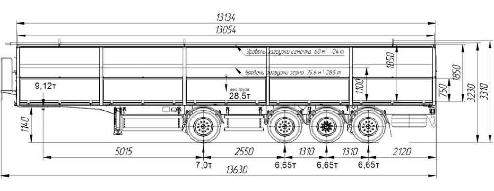

О полуприцепе
Полуприцеп Т4-16V/VK предназначен для перевозки грузов массой до 27 000 килограммов, при этом объем кузова равен 110,6 кубическим метрам. Особое внимания заслуживает тентовая ткань, обладающая плотностью, равной 900 граммов на квадратный метр. Данный полуприцеп шторно-бортовой (крыша и бока полуприцепа сдвигаются отдельно), что очень удобно при погрузке-разгрузке как с боков полуприцепа, так и с верхней части. Для большего комфорта эксплуатации, с наружной стороны имеется специальная ручка предназначенная для сдвигания бокового тента.
Полуприцеп Т4-16V/VK предназначен для перевозки грузов массой до 27 000 килограммов, при этом объем кузова равен 110,6 кубическим метрам.
